Raw-Dogging Phoenix LiveView ~ 2024.08.30 @ 13.38
I recently learnt that what I do with my website, basically just html, css and js, no framework, is called raw-dogged website.
I decided to make a raw-dogged version of phoenix liveview. Let's get on with it.
First, we need a router. Phoenix needs router so here's a simple router.
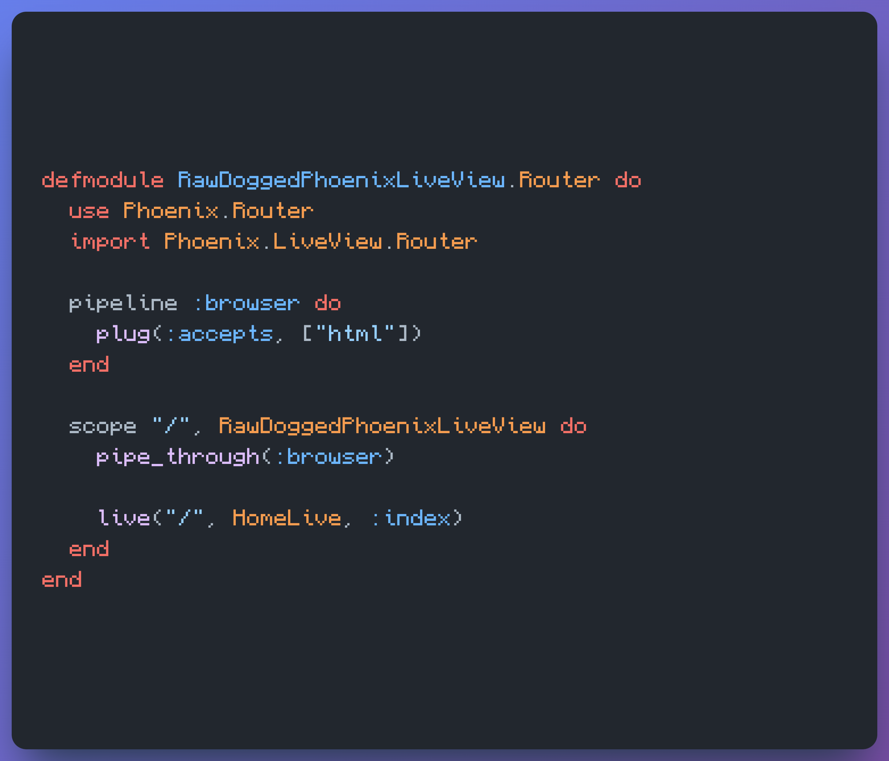All good so far. Now, we need our liveview module to handle the route, we named HomeLive.
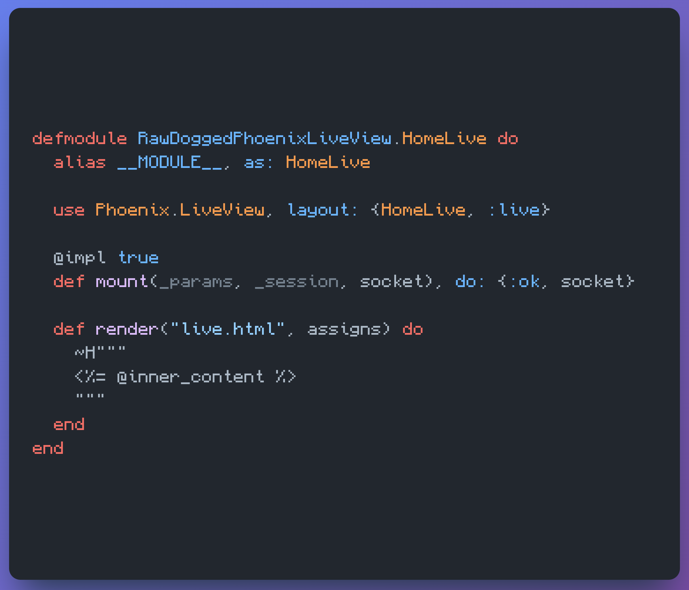Next, we need to define our Endpoint module. For now the following is enough.
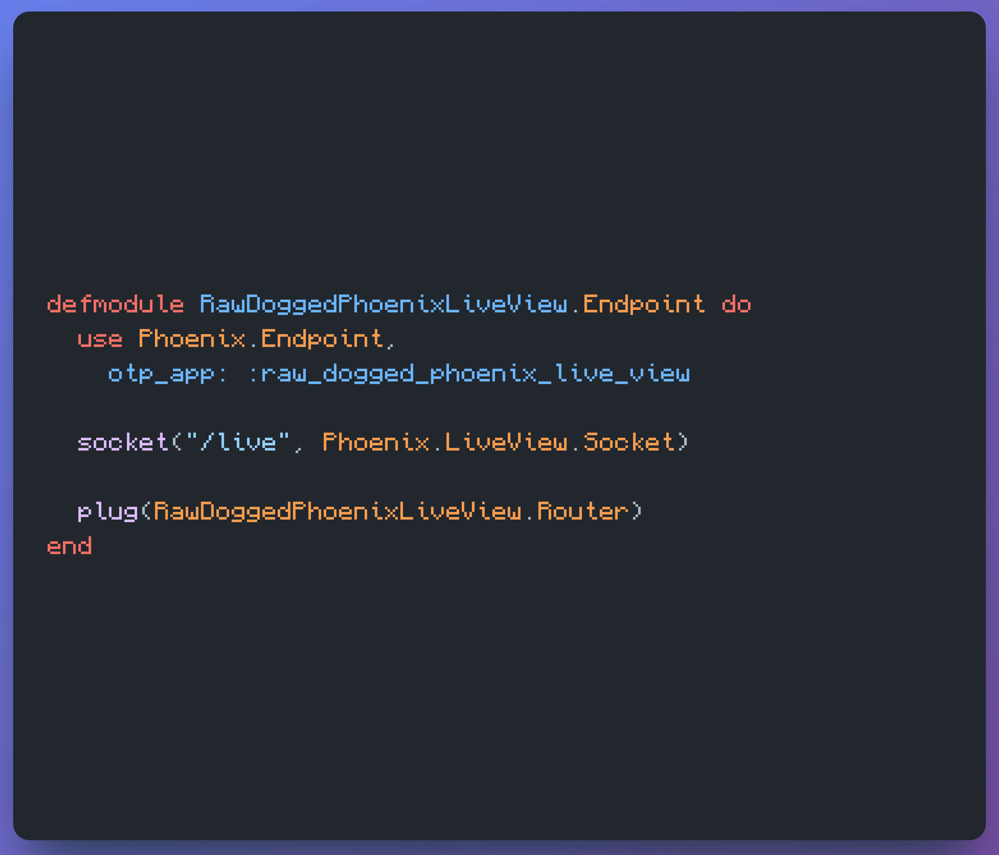In order to start the supervisor with Endpoint module we need to define some app vars.
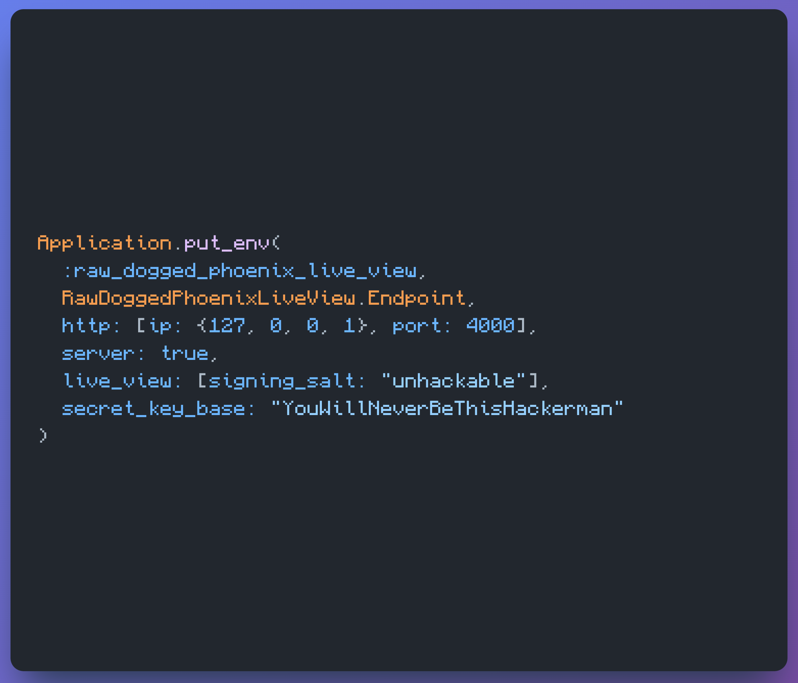 And finally, we need to start our IEx 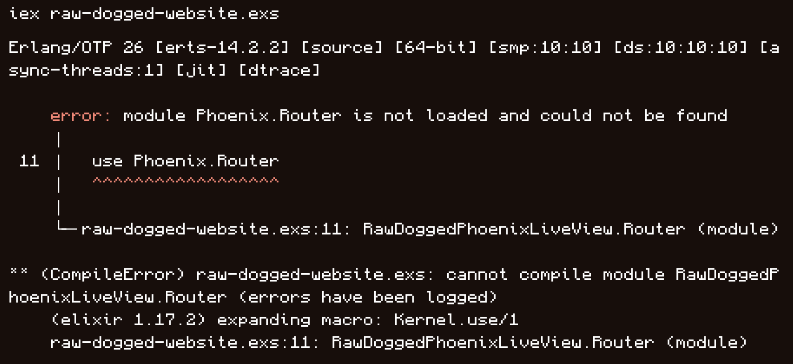Of course, classic idiot. I need to install the libraries. Duh! For that, there's a nice trick from Mix.
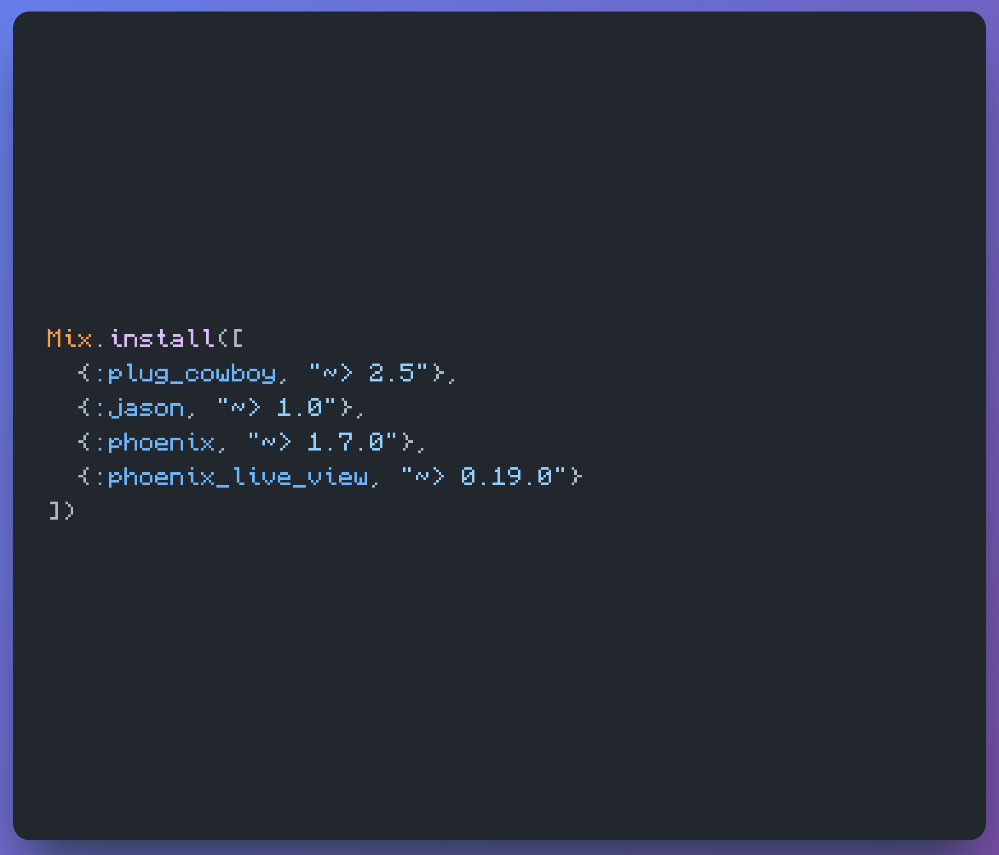Ok, now we have a diff error. Crap.
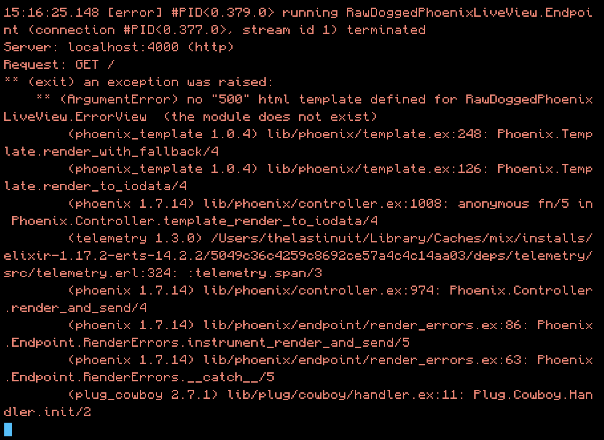Apparenty, I need to defined the error_view [1].
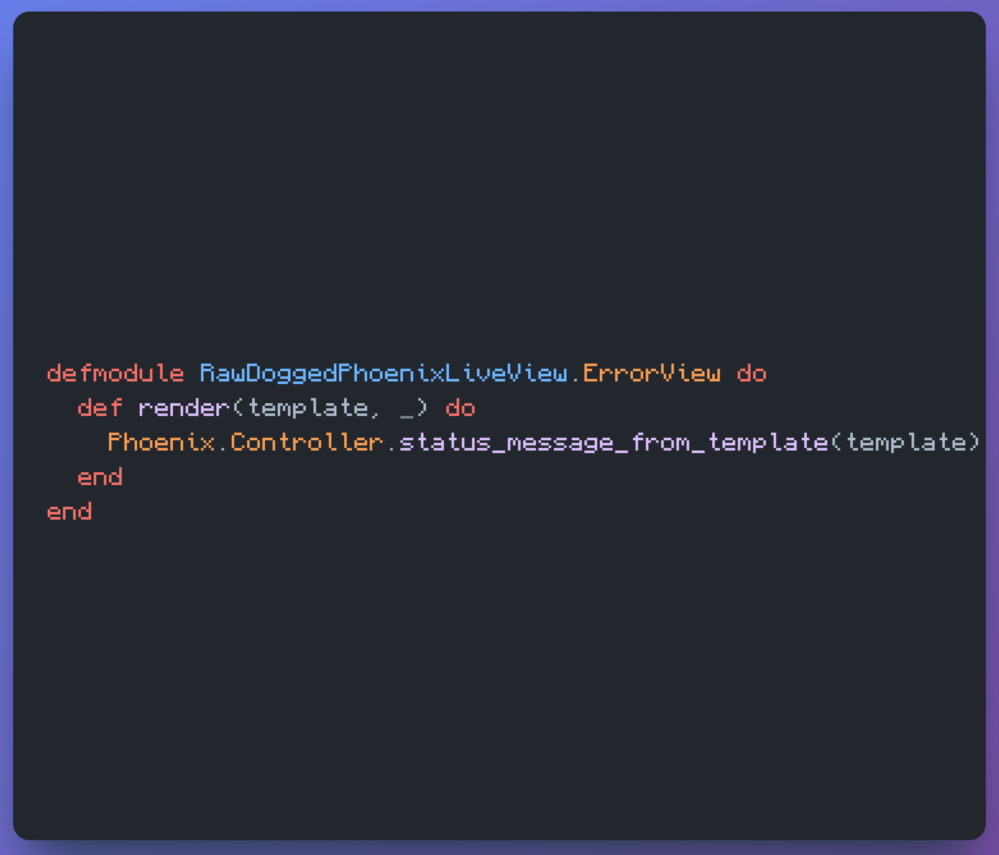And voila! Server is up.
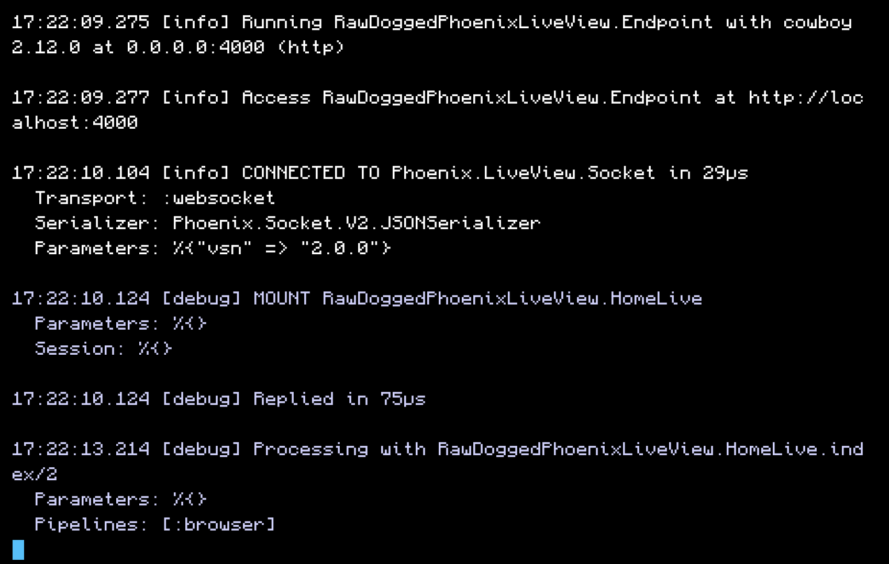Final step is to actually connect to the websocket which is not as you can see in the above image.
Let's update our HomeView to have the correct versions for phoenix and phoenix liveview.
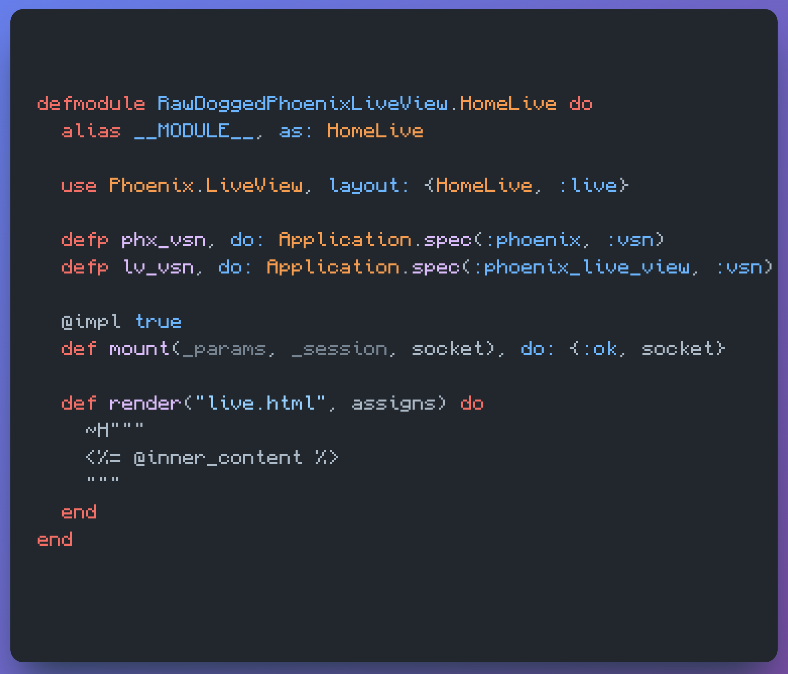And update also the render to have the respective scripts.
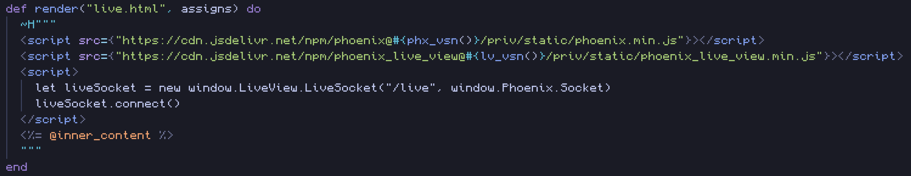Presto! It works. Next time, let's make something more complex than just this.
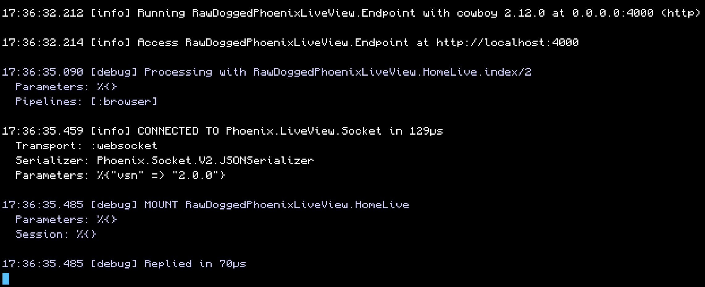 complete .exs